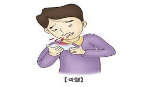

<DOCTYPE html>
<meta charser:"utf-8">
<head>
        <style>
                h1,h2,div {text-align: center;}
                h1 {background-color: lightcoral;}
                div {max width: 1500px;
                      margin:0 auto;}
                div.div1 {max width:250px;
                          border: 4px solid lightcoral;
                          border-radius:5px;
                          margin:5px;
                          text-align: center;
                          display: inline-block;
                          box-shadow: 0 0 16px deepskyblue;} 
                div.div1:hover {transform: rotate(10deg);}
                
            </style>
</head>

<body>
    <h1>IAaD</h1>    
     <h2>찾으시는 질병을 선택 해 주세요</h2>
        <div style="border: 4px solid lightcoral; border-radius:5px; ">
          <div class="div1" ><a><figcaption>A형 간염</figcaption></a></div>
          <div class="div1" ><a><figcaption>갑상선 기능 저하</figcaption></a></div>
          <div class="div1" ><a><figcaption>결핵</figcaption></a></div>
          <div class="div1" ><a><figcaption>불면증</figcaption></a></div>
          <div class="div1" ><a><figcaption>자궁근종</figcaption></a></div>
          <div class="div2" style="border: 4px solid lightcoral; border-radius:5px; margin: 20px; height:350px; max width:1450px; bottom:20px">
                        <h5 id="myHeader1"></h5>
                        <h5 id="myHeader2"></h5>
                        <h5 id="myHeader3"></h5>
                        <h5 id="myHeader4"></h5>
                        <h5 id="myHeader5"></h5>
          </div>
        </div>
</body>
<script>
                function displayResult1() {
                    document.getElementById("myHeader1").innerHTML = "<h2>정의</h2><p>간염 바이러스의 한 종류인 A형 간염 바이러스(hepatitis A virus, HAV)에 의해 발생하는 간염으로 주로 급성 간염의 형태로 나타난다.</p><h2>원인</h2><p>A형 간염은 기존의 B형 간염이나 C형 간염과 같이 혈액을 통해 전염되는 것이 아니라 A형 간염 바이러스에 오염된 음식이나 물을 섭취함으로써 전염된다.</p><h2>증상</h2><p>피로감,메스꺼움, 구토,식욕부진,발열,우측 상복부의 통증</p><h2>질병 예방</h2><p>A형 간염에는 예방 백신이 있다. </p>";
                }
                function displayResult2() {
                    document.getElementById("myHeader1").innerHTML = "<h2>정의</h2><p>갑상선 기능 저하증이란 갑상선에서 갑상선 호르몬이 잘 생성되지 않아 체내에 갑상선 호르몬 농도가 저하된 또는 결핍된 상태를 뜻하며, 원인은 갑상선 자체에 문제가 있어서 갑상선 호르몬</p><p> 생산이 줄어드는 경우와 갑상선에서 호르몬을 만들도록 하는 신호에 문제가 생겨서 갑상선 호르몬 생산이 줄어드는 경우로 나눌 수 있다.</p><h2>원인</h2><p>갑상선 호르몬이 체내에 부족하게 되는 원인은 갑상선 자체에 문제가 있어서 갑상선 호르몬 생산이 줄어드는 경우와 갑상선에서 호르몬을 만들도록 하는 신호에 문제가 생겨서 갑상선 호르몬</p><p> 생산이 줄어드는 경우로 나눌 수 있다. 가장 흔한 원인은 하시모토 갑상선염(자가면역성 갑상선염)에 의해 갑상선 자체에서 갑상선 호르몬의 생산이 줄어드는 경우이다.</p>";
                }
                function displayResult3() {
                    document.getElementById("myHeader1").innerHTML = "<h2>정의</h2><p>결핵은 기원전 7천년 경 석기 시대의 화석에서 그 흔적이 발견된 이래 인류 역사상 가장 많은 생명을 앗아간 감염 질환이다.</p><h2>원인</h2><p>결핵은 그 정의상 결핵균에 의한 감염 때문에 발생한다.</P><h2>증상</h2><p>발열,야간 발한, 쇠약감,식욕부진, 체중 감소, 기침, 호흡곤란,흉통</p><h2>예방</h2><p>결핵을 예방하려면 비씨지 접좁을 해야 한다.</p>";
                }
                function displayResult4() {
                    document.getElementById("myHeader1").innerHTML = "<h2>정의</h2><p>수면은 우리 삶의 큰 비중을 차지하는 건강의 중요한 영역입니다. 불면증(수면장애)은 잠들기가 어려운 입면 장애와 잠은 들지만 자는 도중 자주 깨거나 너무</p><p> 일찍 잠에서 깨어나는 수면유지 장애를 뜻합니다.</p><h2>원인</h2><p>불면증은 평소 잠자는 시간이나 습관이 불규칙한 사람에게 생기며, 환경 변화와 심리적인 스트레스를 겪으면서 증상이 악화됩니다. 불면증 자체에 대해 지나치게 걱정하는</p><p> 경우에도 신경계가 긴장하여 불면증이 지속되고 심해질 수 있습니다.</p>";
                }
                function displayResult5() {
                    document.getElementById("myHeader1").innerHTML = "<h2>정의</h2><p>자궁은 방광과 직장 사이의 여성의 하복부에 위치하는 조롱박 혹은 서양배 모양의 생식기관입니다. 자궁은 내부가 비어 있는 두꺼운 근육으로 이루어져 있는데,</p><p> 길이는 약 7.5cm, 폭은 약 5cm, 그리고 두께는 약 2.5cm 정도로 여러분의 손바닥 정도 크기입니다. 자궁은 내부가 비어 있는 두꺼운 근육으로 이루어진 장기입니다. 자궁내부</p><p>의 빈 공간, 다른 말로 자궁내강(內腔)은 앞뒤로 납작한 삼각형의 틈새 공간으로서, 위쪽으로는 난관을 통하여 골반강과 연결되며, 아래쪽으로는 자궁경부를 통하여 질과 연결됩니다.</p>";
                }
</script>